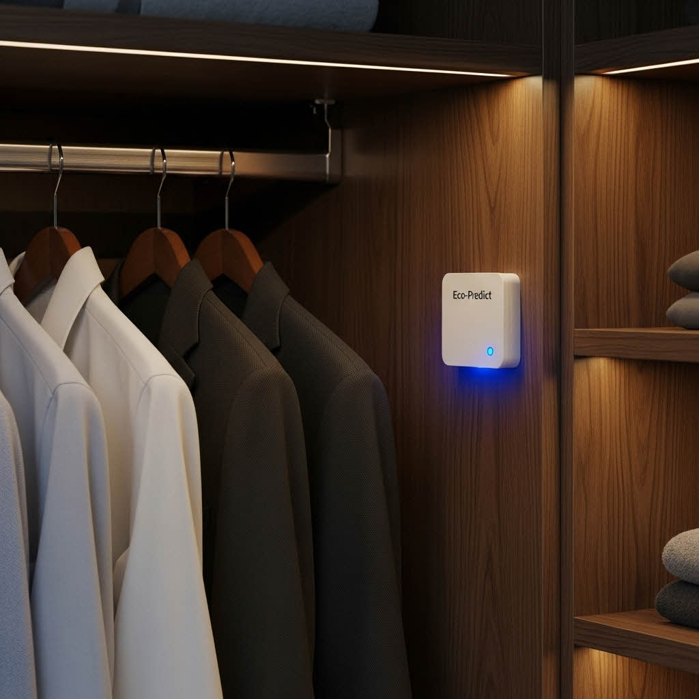
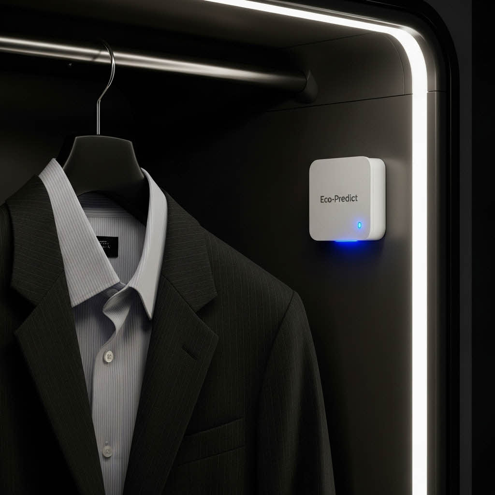
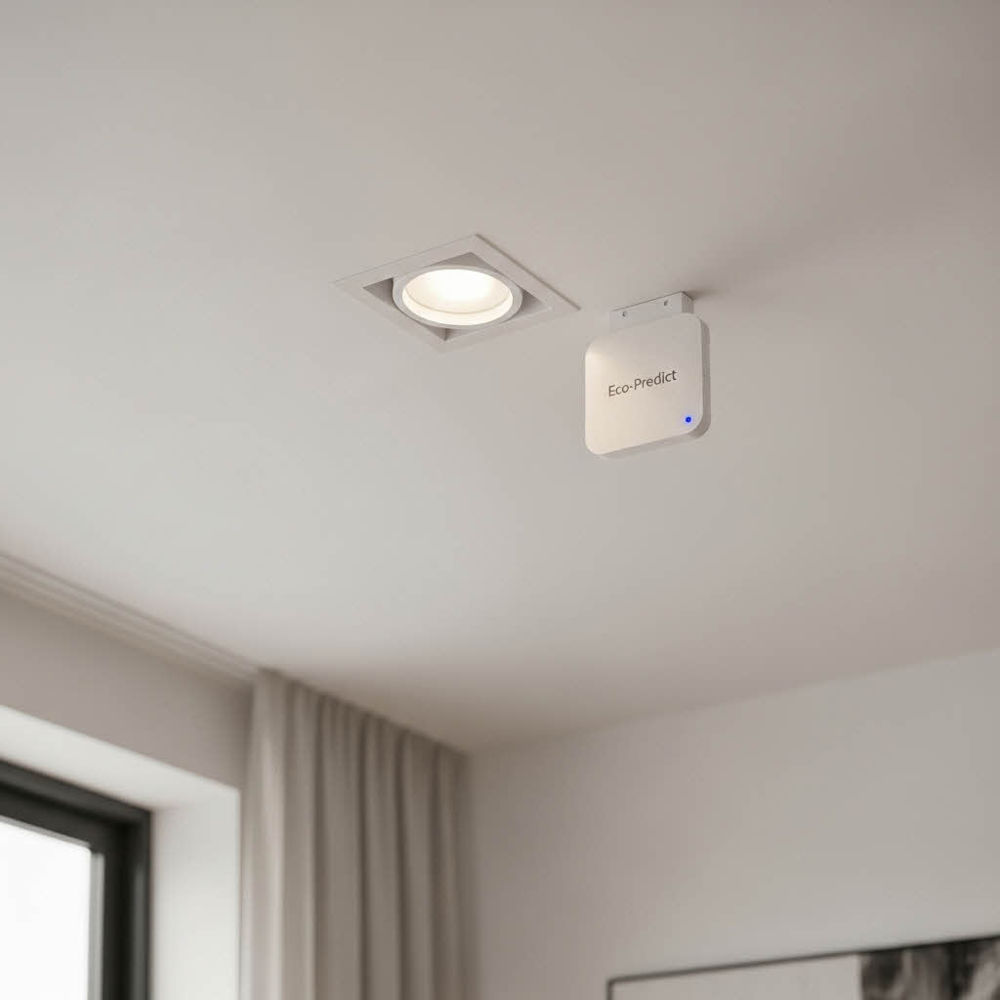
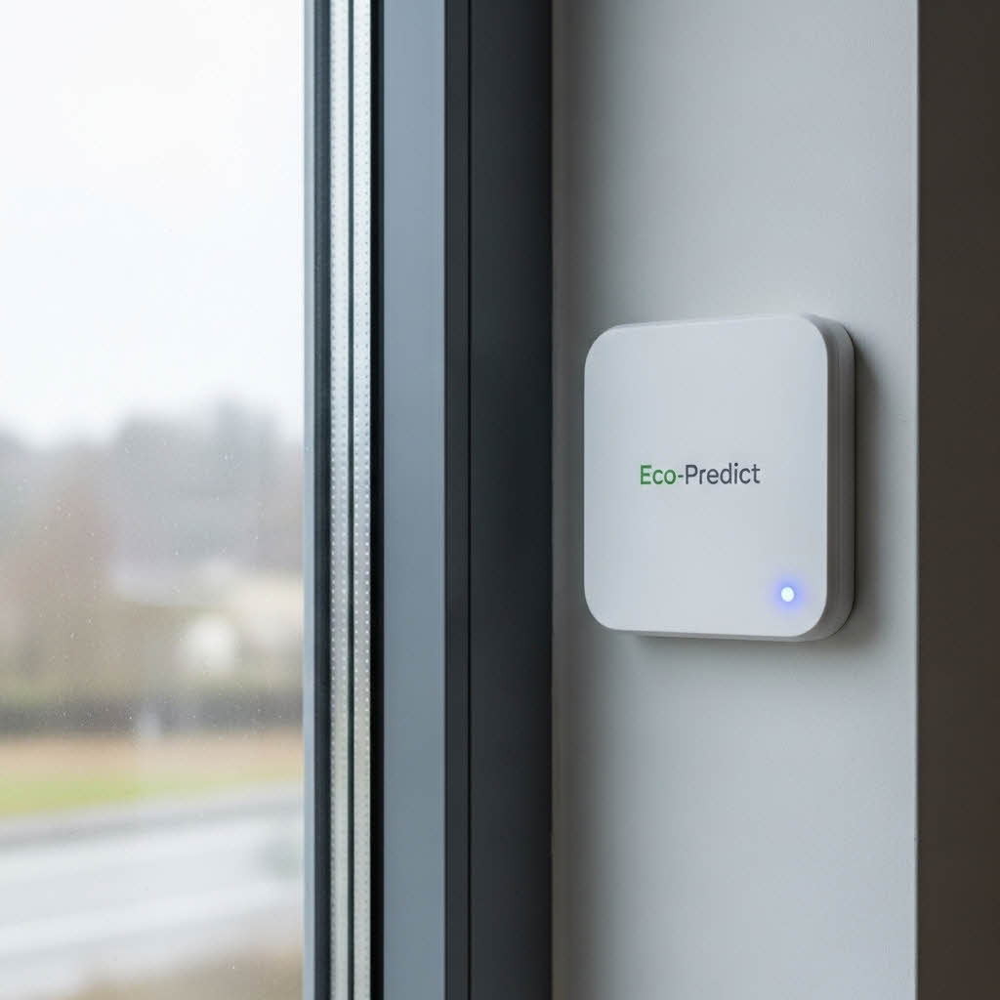
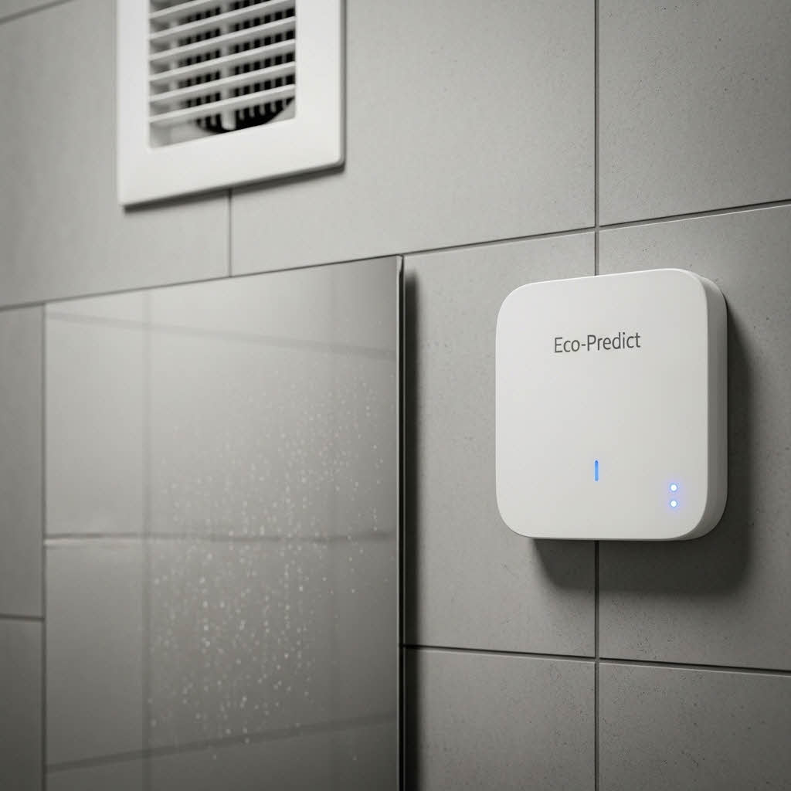
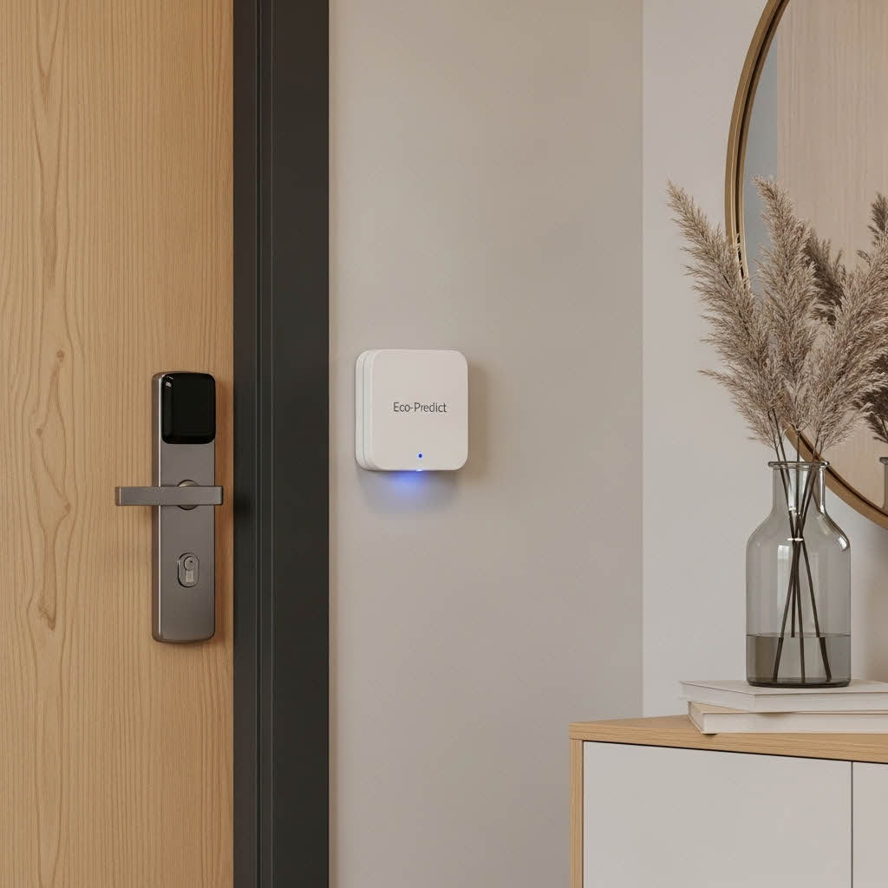
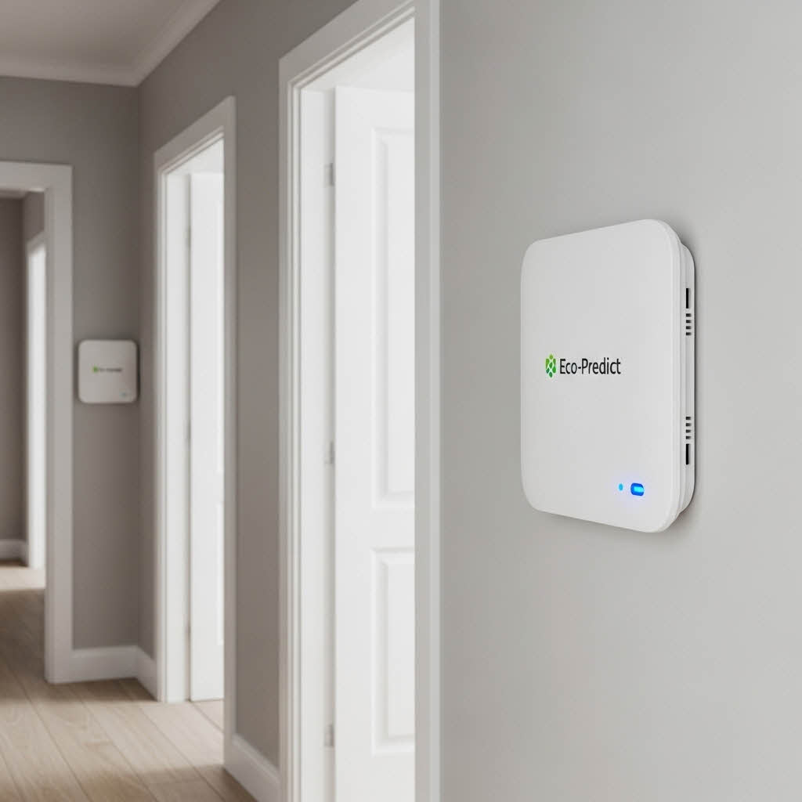
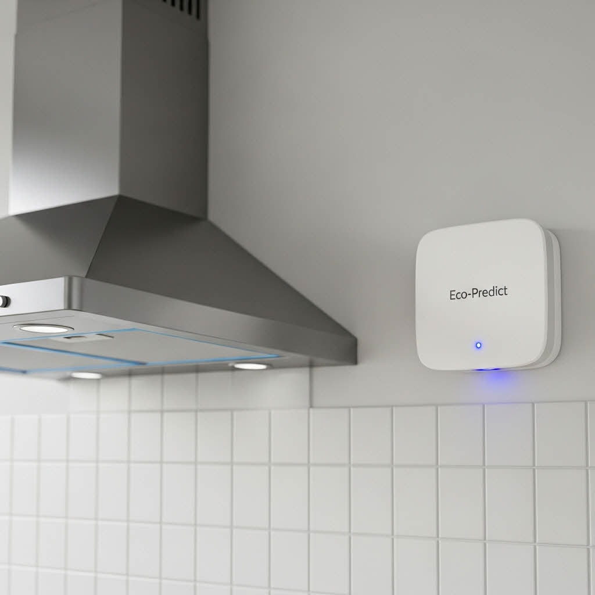
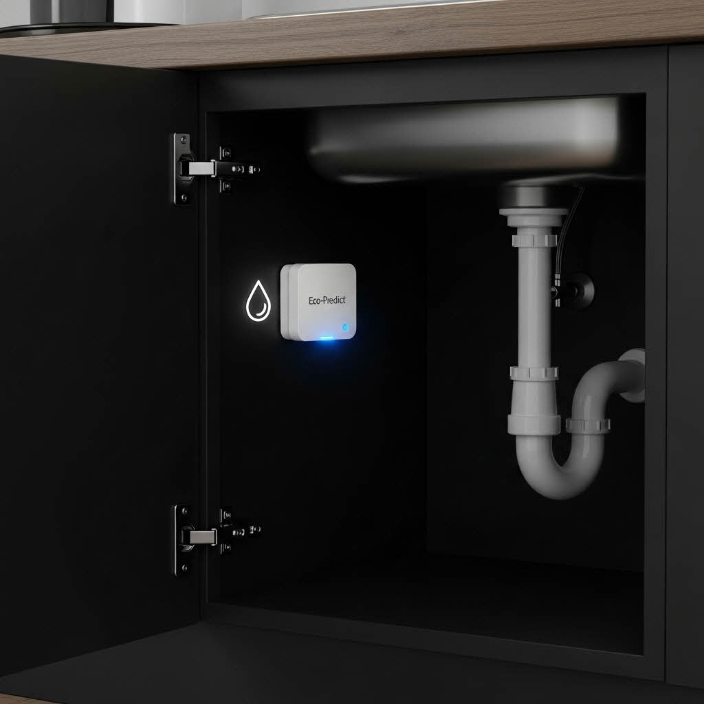

파괴적 예측: 지속가능한 미래를 위한 AI
눈에 보이지 않는 손상을 미리 감지하여 자산과 환경을 보호합니다.
문제 정의
건물 및 인프라의 노후화는 매년 수십억 달러의 수리 비용을 발생시키며, 이 중 상당 부분은 **미세한 환경 스트레스**로 인해 발생합니다. 기존 센서는 이미 손상이 발생한 후에만 감지합니다.
우리의 솔루션
Eco-Predict는 **AI 기반 예측 진단 모듈**로, 온도, 습도, 유해 가스(VOCs)와 같은 IoT 센서 데이터를 분석하여 **자산 손상을 예측**하고 유지보수 일정을 최적화합니다.
시장과 성장 전망
15%+
연간 성장률(%)
B2B & B2G
주요 목표 고객
95%
AI 예측 정확도(%)
모듈 배치 예시 (12개 위치)










